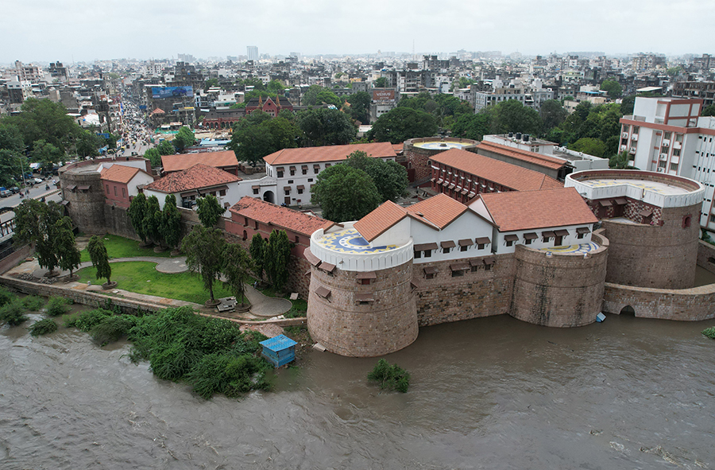
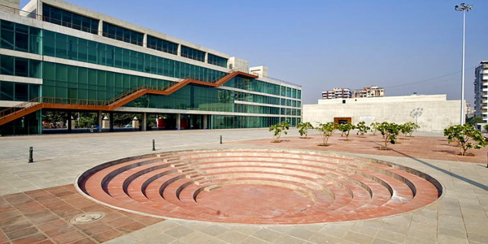
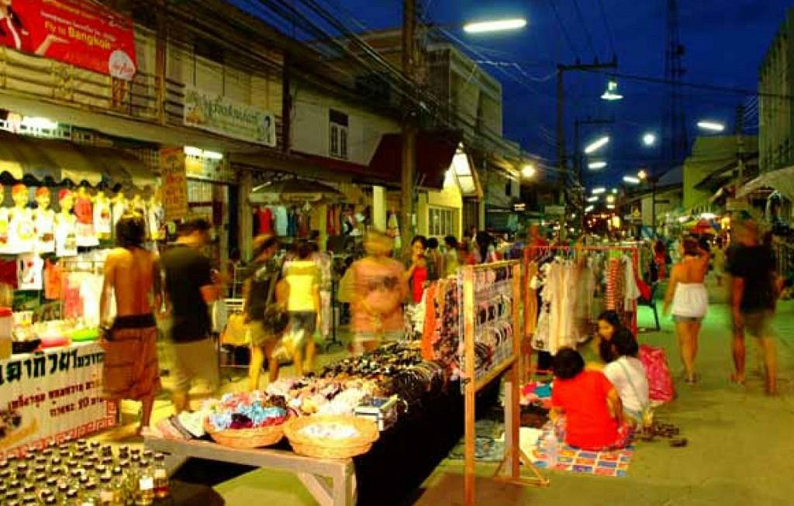

Surat Castle: A Historical Marvel
Surat Castle, also known as Surat Fort, is a historical fortification that stands as a testament to the city’s rich history.
Fun Fact:
~It was built in the 1500s to protect the city from Portuguese invasions!
Things to Explore at Surat Castle:
-
The Grand Entrance:
Marvel at the impressive entrance gate adorned with intricate carvings.
-
The Watchtowers:
Climb the watchtowers for panoramic views of the city and the Tapi River!
-
The Museum:
Visit the museum inside the castle that showcases artifacts from Surat’s history.
-
The Courtyard:
Relax in the serene courtyard surrounded by ancient walls and greenery!
-
The Light and Sound Show:
Enjoy an evening light and sound show that narrates the history of Surat Castle!
Why Visit Surat Castle?
!Because it’s a perfect place to explore Surat’s historical significance and architectural beauty!
Dumas Beach: A Serene Escape
Dumas Beach is a popular black sand beach located along the Arabian Sea, known for its serene beauty and vibrant atmosphere.
Fun Fact:
~It is famous for its black sand, which is believed to have therapeutic properties!
Things to Explore at Dumas Beach:
-
The Scenic Beauty:
Enjoy the breathtaking views of the Arabian Sea and the surrounding landscape!
-
The Water Sports:
Engage in various water sports activities like jet skiing and parasailing!
-
The Food Stalls:
Savor delicious street food from the numerous stalls lining the beach!
-
The Evening Strolls:
Take a leisurely stroll along the shoreline during sunset for a magical experience!
-
The Camel Rides:
Experience a unique camel ride along the beach for a memorable adventure!
Why Visit Dumas Beach?
!Because it’s a perfect place to relax, unwind, and enjoy the natural beauty of Surat’s coastline!

Surat Science Centre: A Hub of Knowledge
Surat Science Centre is an interactive science museum that aims to promote scientific knowledge and curiosity among visitors.
Fun Fact:
~It features a planetarium, an aquarium, and numerous interactive exhibits!
Things to Explore at Surat Science Centre:
-
The Planetarium:
Experience captivating shows about astronomy and space exploration!
-
The Interactive Exhibits:
Engage with hands-on exhibits that make learning about science fun!
-
The Aquarium:
Discover the fascinating underwater world with various marine species!
-
The Workshops:
Participate in workshops and educational programs for all age groups!
-
The Gift Shop:
Shop for educational toys, books, and souvenirs from the science centre gift shop!
Why Visit Surat Science Centre?
!Because it’s a perfect place for families and science enthusiasts to explore and learn together!
Surat Cathedral: A Spiritual Retreat
Surat Cathedral, also known as the Cathedral of Our Lady of the Immaculate Conception, is a beautiful church that reflects the city’s colonial heritage.
Fun Fact:
~It is one of the oldest churches in Surat, built during the British colonial period!
Things to Explore at Surat Cathedral:
-
The Stunning Architecture:
Admire the Gothic-style architecture and intricate stained glass windows!
-
The Peaceful Ambiance:
Experience the serene atmosphere perfect for reflection and prayer!
-
The Historical Significance:
Learn about the history and significance of the cathedral in Surat’s heritage!
-
The Community Events:
Participate in community events and services held at the cathedral!
-
The Surrounding Gardens:
Enjoy a peaceful walk in the gardens surrounding the cathedral!
Why Visit Surat Cathedral?
!Because it’s a perfect place for spiritual reflection and appreciating Surat’s colonial history!

Surat Market: A Shopper’s Paradise
Surat Market is a bustling marketplace known for its vibrant atmosphere and diverse range of products, from textiles to jewelry.
Fun Fact:
~It is one of the largest textile markets in India, offering a wide variety of fabrics and garments!
Things to Explore at Surat Market:
-
The Textile Shops:
Shop for exquisite silk sarees, fabrics, and traditional garments!
-
The Jewelry Stores:
Discover stunning diamond jewelry and traditional ornaments!
-
The Street Food Stalls:
Savor delicious local delicacies and street food specialties!
-
The Handicrafts:
Explore unique handicrafts and souvenirs made by local artisans!
-
The Cultural Experience:
Immerse yourself in the vibrant culture and traditions of Surat!
Why Visit Surat Market?
!Because it’s a perfect place for shopping enthusiasts and food lovers to experience the essence of Surat!